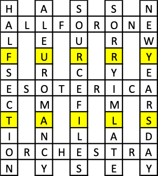
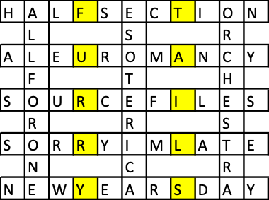

Five of the answers to this round’s puzzles are 11 letters long, and the other three are 9 letters long. They can interlock into a symmetrical crossword, as clued by “cross” in the puzzle’s text.
Once the grid is assembled, the answer FURRY TAILS can be read from the rows (or columns, depending on your grid orientation) where you would expect two more 9-letter answers to appear to make a complete grid.
|  |  |